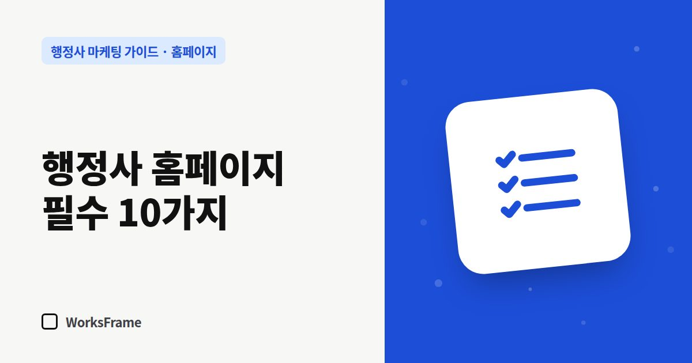

홈페이지
행정사 홈페이지에 꼭 들어가야 할 10가지
한 줄 답
대표 행정사, 등록 정보, 주소, 주력 업무, 업무별 안내, 자주 묻는 질문, 수임료 안내 방식, 휴대폰 상담 버튼, 상담 시간, 개인정보처리방침. 이 10가지가 있는지 확인하세요.

처음 들어온 방문자는 몇 초 안에 두 가지를 판단합니다. “내 일을 하는 곳인가?”, “믿고 연락해도 되나?” 그 판단을 돕는 10가지입니다.
믿음을 주는 것
- 사무소명과 대표 행정사 — 이름, 사진, 짧은 이력. 얼굴이 보이면 연락이 쉬워집니다.
- 등록 정보 — 행정사 업무신고, 사업자 정보 등 사무소가 확인해 준 사실. 출입국민원 대행기관처럼 해당하는 등록이 있다면 함께.
- 주소와 오시는 길 — 지도, 주차, 대중교통. 방문 상담이 많다면 사진도.
내 일인지 알게 하는 것
- 주력 업무 2~3개 — 첫 화면에서 바로 보이게.
- 업무별 안내 페이지 — 대상·요건·준비서류·절차·기간 순서로. (쓰는 법)
- 자주 묻는 질문 — 상담에서 매번 반복하는 질문을 모아 두면 상담 시간이 줄어듭니다.
- 수임료 안내 방식 — 금액을 다 적지 않더라도 “어떻게 정해지는지”는 알려 주세요. (안내하는 법)
연락하게 만드는 것
- 휴대폰에서 늘 보이는 상담 버튼 — 전화, 카톡, 문의 폼. (버튼 위치)
- 상담 시간과 답변 예상 시간 — “영업일 1일 안에 답변”처럼.
- 개인정보처리방침 — 문의 폼으로 이름·연락처를 받는다면 필요합니다. (체크리스트)
넣지 않는 게 나은 것
- 허가·비자 발급을 보장하는 문구
- 확인되지 않은 승소율·처리 건수
- 무엇이든 한다는 긴 업무 목록
- 오래전 날짜에 멈춘 공지사항
자세한 이유는 피해야 할 표현에 정리했습니다.
1분 자가 점검
휴대폰으로 내 홈페이지를 열고 스스로 물어보세요.
- 첫 화면만 보고 무슨 업무 사무소인지 알 수 있나?
- 전화 버튼이 스크롤 없이 보이나?
- 대표 행정사의 얼굴이나 이름이 보이나?
- 마지막 업데이트가 1년 이상 지나지 않았나?
자주 묻는 질문
페이지는 몇 개가 적당한가요?
처음에는 첫 화면, 사무소 소개, 주력 업무 안내(업무마다 1개), 자주 묻는 질문, 상담 정도면 충분합니다. 그다음 업무 안내 글을 매달 늘려 가세요.
대표 사진은 꼭 있어야 하나요?
필수는 아니지만, 전문직 사무소에서는 사람이 보이는 것이 신뢰에 큰 도움이 됩니다. 부담스럽다면 상담 공간 사진이라도 넣으세요.